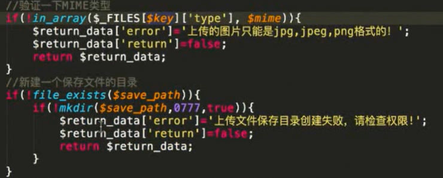

不安全的文件上传漏洞
很多web站点都有文件上传接口，比如:
- 注册时上传头像图片(比jpg.png.gif等);
- 上传文件附件(doc,xls等)
而在后台开发时并没有对上传的文件功能进行安全考虑或者采用了有缺陷的措施，导致攻击者可以通过一些手段绕过安全措施从而上传一些恶意文件[如:一句话木马]从而通过对该恶意文件的访问来控制整个web后台。
- 测试流程 1. 对文件上传的地方按要求上传文件，查看返回结果[路径、提示] 2. 尝试上传不同类型的“恶意”文件[比如xx.php文件，分析结果] 3. 查看html源码，看是否通过js在前端做了上传限制，可以绕过 4. 尝试不同方式绕过：黑白名单绕过/MIME类型绕过/目录0x00截断绕过 5. 猜测/结合其他漏洞[比如敏感信息泄露]得到木马路径，连接测试
- client check
前端限制，直接删除onchange内容，即可绕过限制
- MIME type
- MIME：多用途互联网邮件扩展类型。是设定某种扩展名的文件用一种应用程序来打开的方式类型，当该扩展名文件被访问的时候，浏览器会自动使用指定应用程序来打开。多用于指定一些客户端自定义的文件名，以及一些媒体文件打开方式。
每个MIME类型：数据的大类别[声音audio、图象image等]+定义具体的种类。
常见的MIME类型：
超文本标记语言文本.html.html text/html 普通文本.txt text/plain RTF文本.f application/rtf GIF图形.gif image/gif JPEG图形.ipeg..jpg image/jpeg
- $_FILES()：
从客户计算机向远程服务器上传文件。
第一个参数是表单的input name，第二个下标可以是"name"，"type","size"，"tmp_name"或 error"。
| $_FILES [ "file" ] [ 'name"] | 被上传文件的名称 |
|---|---|
| $_FILES [ "file" ] [type"] | 被上传文件的类型 |
| $_FILES[”file"] ["size"] | 被上传文件的大小，以字节计 |
| $_FILES["file"] ["tmp_name"] | 存储在服务器的文件的临时副本的名称 |
| $_FILES["file"] ["error"] | 由文件上传导致的错误代码 |

抓包，在repeater里把content-type改成符合要求的
getimagesize（）
Getimagesize()返回结果中有文件大小和文件类型，如果用这个函数来获取类型，从而判断是否是图片的话，会存在问题。
可以绕过：因为图片头可以被伪造。
- 图片木马的制作:
直接伪造头部GIF89A CMD:copy /b test.png + muma.php cccc.png 使用GIMP(开源的图片修改软件)，通过增加备注，写入执行命令
- 与文件包含漏洞结合
在文件上传漏洞中制作复合恶意图片，在文件包含漏洞的URL里改成该恶意文件
- 防范措施
- 不在前端使用js实施上传限制策略 2. 通过服务器对上传文件限制： * 多条件组合检查[文件大小、路径、扩展名、文件类型、文件完整性] * 对上传的文件在服务器上存储时进行重命名[指定合理命名规则] * 对服务器端上传文件的目录进行权限控制[比如只读]，限制执行权限带来的危害